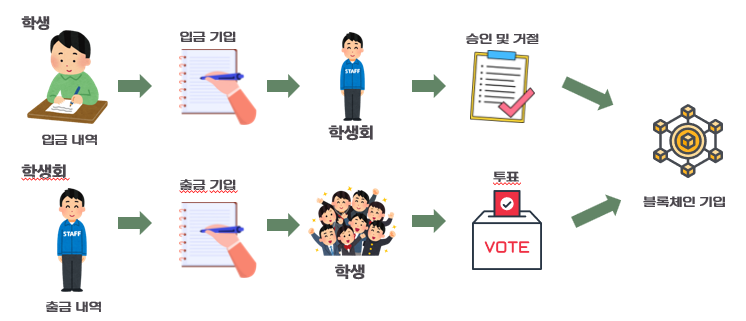
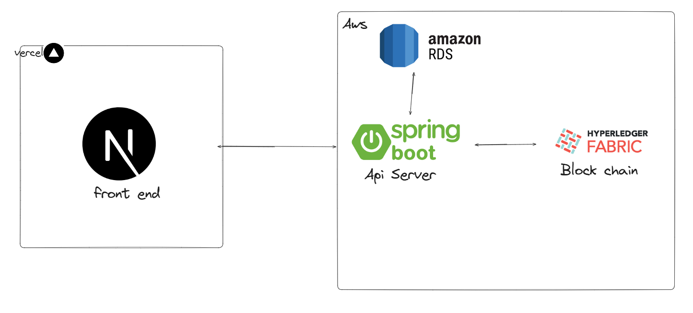
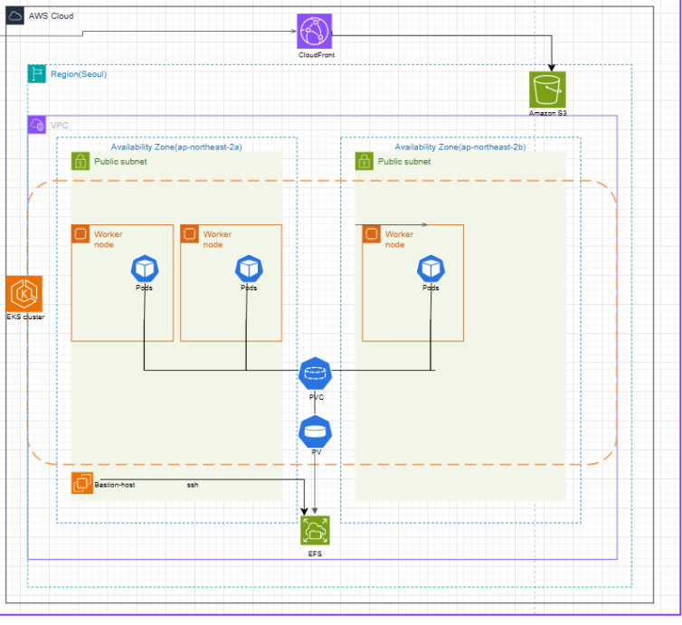
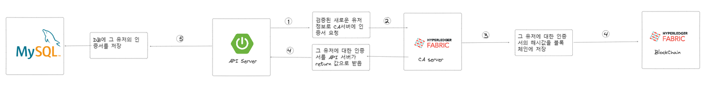
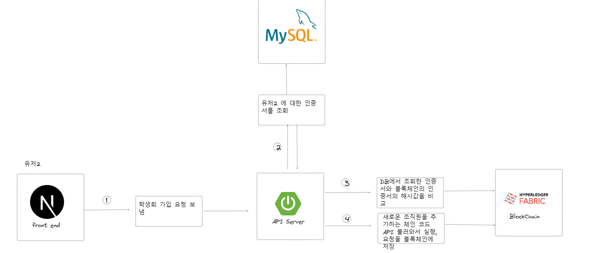
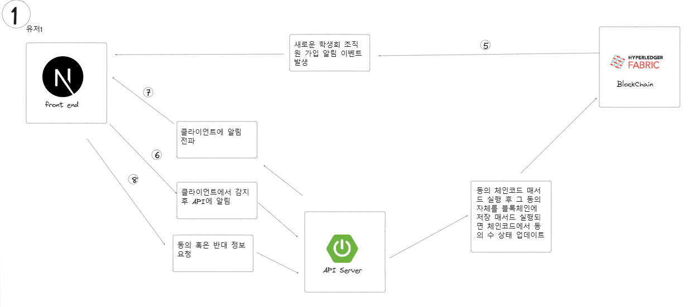
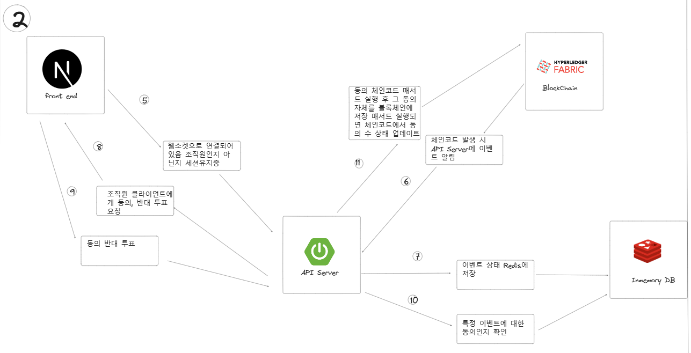
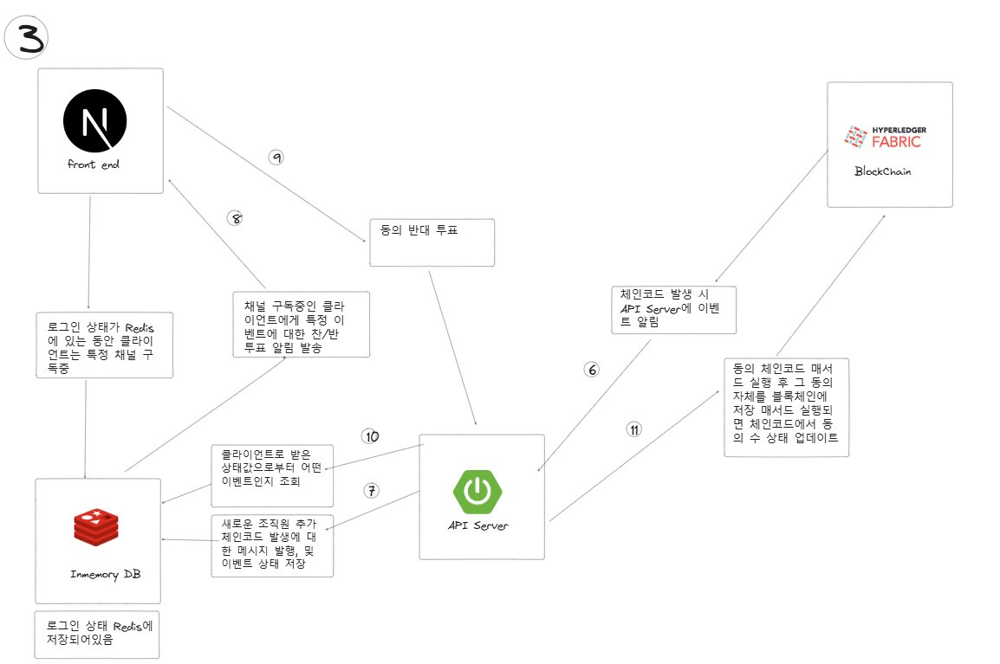

01상황: 어떤 프로젝트이고 무엇을 해결하는가
학과 캡스톤디자인에서 4명이 만든 학생회비 장부 서비스입니다. 조직 README에 적힌 주제는 "학생회비 장부를 학과 구성원들과 투명하게 공개하는 블록체인 기반 클라우드 네이티브 웹 서비스"입니다.
학생회비는 학생이 내고 학생회가 씁니다. 그런데 장부는 학생회만 기록합니다. 학생은 기록이 맞는지 확인할 방법이 없습니다. 조직 README에 적힌 목표는 학생회 공금 횡령 문제를 예방하는 것입니다.
- 해결하려는 문제
- 학생회만 기록하는 학생회비 장부를 학생이 확인할 수 없습니다.
- 해결 방식
- 입금은 학생회가 승인하고, 출금은 학생이 투표로 허가합니다. 승인된 기록은 블록체인 원장에 남깁니다.

서비스 기능
- 입금: 학생이 행사명, 연도, 학기, 금액, 증빙 자료로 입금 내역을 올립니다. 학생회가 승인하거나 거절합니다.
- 출금: 학생회가 같은 항목으로 출금 내역을 올립니다. 학생이 1시간 동안 투표해 허가 여부를 정합니다.
- 가입: 학생과 학생회 소속을 인증합니다. 가입 요청은 학생회 구성원이 승인합니다.
블록체인을 쓴 이유는 승인된 기록을 학생회도 나중에 고칠 수 없게 하려는 것이었습니다. 블록체인은 기록이 해시로 이어져 있어 하나를 고치면 드러납니다.
용어
- 원장: 블록체인에 남는 거래 기록입니다.
- 체인코드: 원장에 무엇을 어떻게 기록할지 정한 프로그램입니다.
- 피어: 거래를 실행해 결과에 서명(보증)하고 원장을 보관하는 노드입니다.
- 오더러: 보증된 거래를 순서대로 모아 블록으로 묶는 노드입니다.
- CA: 사용자와 노드에 인증서를 발급하는 서버입니다.
02과제와 역할
팀 목표는 가입, 입금 승인, 출금 투표를 원장에 남기는 서비스를 한 학기 안에 만드는 것이었습니다. 팀은 기획과 디자인, 프론트엔드, 백엔드, 블록체인과 인프라 각 1명입니다. 저는 블록체인과 인프라를 맡았습니다.
- 직접 설계하고 개발
- Fabric 네트워크 구성(오더러 3대, 조직 2개의 피어와 CouchDB, CA 3대, 설정 파일 44개 중 Kubernetes 리소스 27개), 체인코드 배포(체인코드 이미지를 피어 밖의 별도 Deployment로 띄우는 외부 서비스 방식), NestJS 연동 서버(CA 인증서 발급, 체인코드 호출, 결과 응답), 서버 사이 메시지 규약(백엔드 담당 팀원과 함께 정하고 NestJS 쪽을 구현)
- 팀원이 맡은 부분
- Spring Boot API 서버(로그인, 학번 검증, MySQL, FCM 알림, 증빙 이미지 업로드), Next.js 화면과 Vercel 배포, 서비스 기획과 디자인
03해결 과정
1. 아키텍처

초기 구조에서는 Spring 서버가 Fabric과 직접 통신했습니다. 최종 구조에서는 블록체인 통신을 NestJS 서버로 떼어 냈습니다. 두 서버 사이에는 Redis Streams를 두었습니다.

- 화면 (Next.js, 팀원): 입출금 등록, 승인, 투표, 조회
- API 서버 (Spring Boot, 팀원): 로그인, 학번 검증, 요청을 스트림에 넣고 응답 대기, FCM 알림
- 메시지 (Redis Streams): 요청 스트림과 응답 스트림 2개
- 연동 서버 (NestJS, Fabric SDK): 요청을 체인코드 호출로 바꾸고 결과를 응답 스트림으로 돌려줌
- 키 저장소 (Firebase): 사용자별 인증서와 개인키 보관
- 원장 (Fabric 2.3): 오더러 3대(Raft), 학생과 학생회 조직의 피어와 CouchDB, CA 3대, 채널 1개
- 인프라 (Kubernetes): 로컬 k3s에서 minikube로 옮겨 운영
2. 주요 흐름
흐름 1. 가입과 인증서 발급
- Spring 서버가 실제 학생인지 확인하고 요청 스트림에 가입 메시지를 넣습니다(팀원).
- NestJS 서버가 요청 스트림에서 메시지를 읽습니다.
- 조직 CA에 사용자를 등록하고 인증서와 개인키를 받습니다.
- 받은 인증서와 개인키를 Firebase에 저장합니다.
- 그 인증서로 가입 요청 체인코드를 실행합니다. 원장에는 대기(PENDING) 상태가 남습니다.
- 체인코드 실행이 끝나면 응답 스트림에 결과를 넣습니다.
- 가입 요청은 학생회 구성원이 승인 체인코드를 실행해야 승인(APPROVED) 상태가 됩니다.


최종 구현에서는 인증서와 개인키를 Firebase에 두었습니다. 원장에는 가입 요청과 승인 상태만 남겼습니다.
흐름 2. 입금과 학생회 승인
- 학생이 입금 내역을 올립니다.
- NestJS 서버가 Firebase에서 그 학생의 인증서를 꺼내 입금 체인코드를 실행합니다.
- 체인코드가 요청자가 학생 조직원인지 검사하고 대기 항목을 만듭니다.
- 학생회 구성원이 승인하면 체인코드가 승인자의 소속을 검사합니다.
- 검사를 통과하면 항목이 승인(APPROVED) 상태가 됩니다.
흐름 3. 출금과 학생 투표
- 학생회가 출금 내역을 올리면 체인코드가 1시간짜리 투표를 엽니다.
- 출금 체인코드 실행이 끝나면 NestJS 서버가 결과를 응답 스트림에 넣습니다.
- Spring 서버가 이 응답을 받아 학생들에게 투표 알림을 보냅니다(팀원).
- 학생이 투표하면 투표 체인코드가 집계를 바꿉니다.
- 투표 마감은 마감 확인 체인코드로 처리합니다. 1시간이 지난 투표는 찬반 비율로 결과가 정해져 원장에 남습니다.
- 이 체인코드는 NestJS 서버 안의 작업이 10분마다 부릅니다.
- 마감 확인은 NestJS 서버에 HTTP 요청을 보내 실행할 수도 있습니다.
3. 설계 고민과 결정
계좌 자동 연동인가, 직접 입력과 상호 확인인가
- 고민: 처음에는 학생회 계좌 거래 내역을 API로 받아 블록체인에 넣으려 했습니다. 계좌 조회 API는 마이데이터 사업자만 쓸 수 있었습니다.
- 선택지: 모의 데이터를 계속 넣어 실시간처럼 보이게 하기, 또는 학생과 학생회가 직접 입력하고 상대가 확인하기.
- 결정: 팀 회의에서 직접 입력 방식으로 정했습니다. 모의 데이터 방식은 사용자가 할 일이 없었습니다. 이에 따라 입금은 학생회가, 출금은 학생이 확인하는 구조가 됐습니다.
퍼블릭 체인인가, 허가형 Fabric인가
- 고민: 학과 밖 사람은 장부를 볼 수 없어야 했습니다. 학생과 학생회 소속도 구분해야 했습니다.
- 선택지: 누구나 참여하는 퍼블릭 체인, 또는 미리 허가된 참여자만 들어오는 Hyperledger Fabric.
- 결정: Fabric을 골랐습니다. 체인코드는 Go로, 연동 서버는 TypeScript로 쓸 수 있어 새 언어를 배울 부담이 적었습니다.
- 구성: 학생 조직과 학생회 조직을 나누었습니다(
StudentMSP,Student-councilMSP). 조직마다 CA를 두었습니다. - 보증 정책: Fabric 기본값인 과반(MAJORITY)입니다. 조직이 2개라 두 조직이 모두 보증해야 기록이 남습니다.
체인코드 이벤트를 누가 받을 것인가



- 고민: 가입 요청이 원장에 남으면 학생회 구성원에게 알려야 했습니다.
- 선택지: 1안은 클라이언트가 1,000개면 이벤트 하나에 요청이 1,000개 들어옵니다. 2안은 연결이 늘수록 서버 부담이 커집니다. 3안은 로그인한 클라이언트만 채널을 구독합니다.
- 결정: 당시 글에서는 3안을 절충안으로 적고, 팀원과 정하기로 했습니다.
- 최종 구조: 블록체인과 통신하는 서버를 NestJS 한 곳으로 모았습니다. 사용자 알림은 Spring 서버가 FCM으로 보냅니다(팀원).
Redis Pub/Sub인가, Redis Streams인가
- 고민: 요청 하나가 여러 서버를 거칩니다. 중간에 NestJS 서버가 멈추면 Pub/Sub 메시지는 사라집니다.
- 선택지: Redis Pub/Sub, Redis Streams, Kafka.
- 결정: Redis Streams를 골랐습니다. 메시지가 스트림에 남아 있어, 받는 서버가 잠시 멈춰도 사라지지 않습니다.
- 지연: 블록체인 기록 한 건은 수백 밀리초에서 몇 초가 걸립니다. 그래서 Streams의 추가 지연은 문제가 되지 않는다고 봤습니다.
- 제외: Kafka는 운영 부담이 커서 뺐습니다.
사용자 키를 어디에 둘 것인가
- 고민: Fabric SDK의 기본 지갑은 키를 서버 디스크 파일로 둡니다. NestJS Pod가 여러 개면 한 Pod에서 가입한 사용자의 키가 다른 Pod에는 없습니다.
- 선택지: 파일 지갑, CouchDB 지갑, Firebase.
- 결정: Firebase를 골랐습니다. CouchDB 지갑은 별도 인프라가 필요했습니다. Firebase는 알림 때문에 이미 쓰고 있었습니다.
- 구현: 요청마다 Firebase에서 꺼낸 인증서와 개인키를 메모리 지갑에 넣어 체인코드를 실행합니다.
4. 구현 상세
Fabric 네트워크를 Kubernetes에 올리기
- 오더러는 etcdraft(Raft 합의) 3대입니다. 3대 중 2대가 살아 있으면 합의가 유지됩니다.
- 블록은 2초가 지나거나 거래가 10건 모이면 만들어집니다(Fabric 샘플 기본값).
- 피어와 CouchDB를 한 Pod에 두었습니다.
- 피어는 Prometheus가 지표를 읽어 갈 수 있게 9443 포트를 열었습니다.
- 띄우는 순서는 PV, CA 3대, 인증서 발급 Job, 초기 블록과 채널 설정 파일을 만드는 Job, 오더러와 피어, 채널 가입, 체인코드 설치와 조직별 승인입니다.
체인코드를 피어 밖에서 실행하기
- 체인코드를 이미지로 만들어 조직마다 별도 Deployment로 띄웠습니다.
- 피어에는 외부 빌더 스크립트를 넣었습니다. 피어는 체인코드를 직접 빌드하지 않고 체인코드 서버에 연결합니다.
- 체인코드 소스는 공개 레포에 없습니다. 배포에 쓴 이미지는 제 Docker Hub 계정에 있습니다.
- NestJS 서버가 호출하는 체인코드 함수는 22개입니다(기록 11개, 조회 11개).
NestJS 연동 서버
- 요청 스트림을 한 번에 10개씩 읽고, 요청 종류 17종을 각 처리기로 넘깁니다.
- 메시지를 처리기에 넘긴 뒤 처리 완료 표시(ACK)를 남깁니다.
- 체인코드 실행이 실패하면 오류 응답을 응답 스트림에 넣어 Spring 서버에 알립니다.
- 응답에 원래 요청의 ID를 넣어 Spring 서버가 요청과 응답을 짝짓게 했습니다.
- 체인코드 이벤트를 받는 처리기와 10분 주기 마감 확인 작업을 서버에 등록했습니다.
04트러블슈팅
CA 인증서에 Pod 이름이 들어가 접속에 실패한 문제
- 문제
- 인증서 발급 스크립트가 CA에 접속하면
x509: certificate is valid for ca-orderer-549bd75db5-xxg95, localhost, not ca-orderer오류가 났습니다. 12시간 넘게 막혀 있었습니다. - 원인
- CA가 처음 뜰 때 만든 TLS 인증서의 이름(CN)에 Pod 이름이 들어갔습니다. 클라이언트는 Service 이름으로 접속해 호스트명 검증에서 실패했습니다.
- 해결
- CA 3대의 설정 파일에 Service 이름을 적어 두고, CA가 뜨기 전에 적용했습니다. 피어 인증서도 Service 이름으로 발급했습니다.
- 결과
- CA, 오더러, 피어가 Service 이름으로 TLS 연결을 맺었습니다.
WSL2 위 k3s에서 CA에 닿지 않던 문제
- 문제
localhost:10054로 CA에 접속하면 해당 프로세스를 찾지 못했습니다.- 원인
- k3s와 WSL2의 네트워크가 분리돼 있었습니다. 포트포워딩으로 우회할 수는 있었지만, WSL2 IP가 실행할 때마다 바뀌어 번거로웠습니다.
- 해결
- 별도 VM으로 클러스터를 만드는 minikube로 옮겼습니다. minikube VM은 Windows와 같은 호스트 네트워크를 씁니다.
- 결과
- 오더러와 피어의 볼륨 설정을 minikube 기준으로 맞췄습니다.
05결과
- 오더러 3대, 조직 2개, CA 3대로 된 Fabric 네트워크를 로컬 Kubernetes에 직접 띄워 운영했습니다.
- 가입, 입금 승인, 출금 투표에 쓰는 체인코드 함수 22개(기록 11개, 조회 11개)를 NestJS 서버에서 호출하게 만들었습니다.
- 구성과 문제 해결 과정은 블로그로 남겼습니다.
한계
- 개인키를 Firebase에 암호화하지 않고 저장했습니다.
- 서버가 모든 사용자의 키를 대신 보관했습니다. 그래서 서버를 운영하는 사람은 누구의 이름으로도 서명할 수 있었습니다.
- NestJS 서버는 메시지를 처리기에 넘긴 직후 ACK를 남깁니다. 그래서 체인코드 실행 중 서버가 멈추면 그 요청은 다시 처리되지 않습니다.
06배운 점
인증서에 적힌 이름이 접속에 쓰는 Service 이름과 다르면 TLS 연결이 맺어지지 않았습니다. 노드를 띄우기 전에 인증서 이름과 Service 이름이 같은지 먼저 확인해야 합니다.